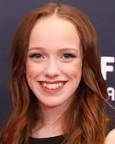
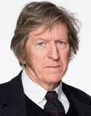

A série é baseada no livro Anne of Green Gables, L.M. Montgomery, que já foi adaptado para várias séries e telefilmes.

Amybeth McNulty (Anne shirley)
Amybeth McNulty é uma atriz irlando-canadense nascimento dia 7 de novembro de 2001 (idade 21 anos),, que ganhou reconhecimento ao estrelar a série canadense Anne with an E, da CBC/Netflix, como a protagonista Anne Shirley, que é baseada no romance Anne of Green Gables escrito por Lucy Maud Montgomery.
Lucas Jade Zumann (Gilbert Blythe )
Lucas Jade Zumann é um ator norte-americano nascimento dia 12 de dezembro de 2000 (idade 22 anos). Ele é conhecido por interpretar Milo no filme de terror A Entidade 2, Jamie Fields no filme de drama 20th Century Women e Gilbert Blythe em Anne with an E.
Geraldine Jemes (Marilla Curthberts)
Geraldine James, OBE é uma atriz inglesa.nascimento 6 de julho de 1950 (idade 72 anos),

R.H.Thomson ( Matthew Curthberts)
Robert Holmes Thomson CM, conhecido como R. H. Thomson, é um ator canadense de televisão,nascimento dia 24 de setembro de 1947 (idade 75 anos), cinema e teatro. Com uma carreira de cinco décadas, ele continua sendo uma presença regular nas telas de cinema e televisão canadenses. Ele recebeu inúmeros prêmios por suas contribuições às artes e aos veteranos de guerra.
Dalila Bela (Diana Barry )
Dalila Bela é uma atriz canadense-americana nascimento 5 de outubro de 2001 (idade 21 anos), conhecida por seu papel como Agente Olive na série Odd Squad da TVOKids/PBS, em filmes como Diary of a Wimpy Kid, e trabalho em programas de televisão como Once Upon a Time e Anne with um E.